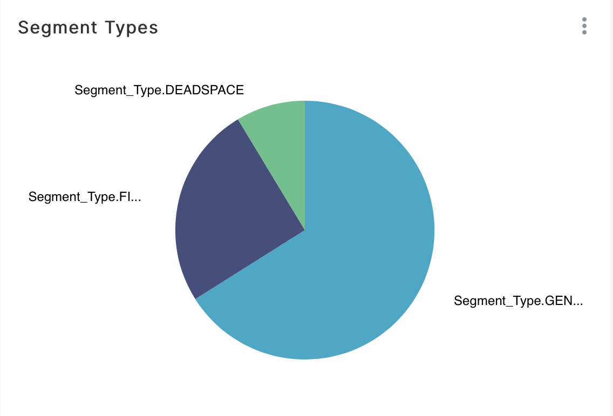
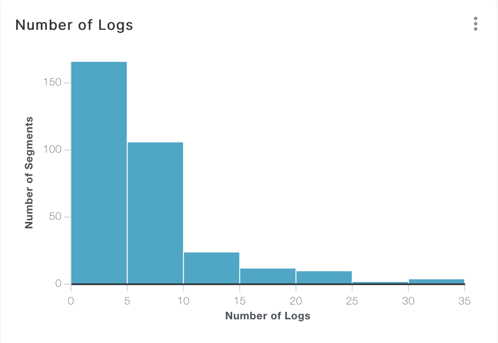
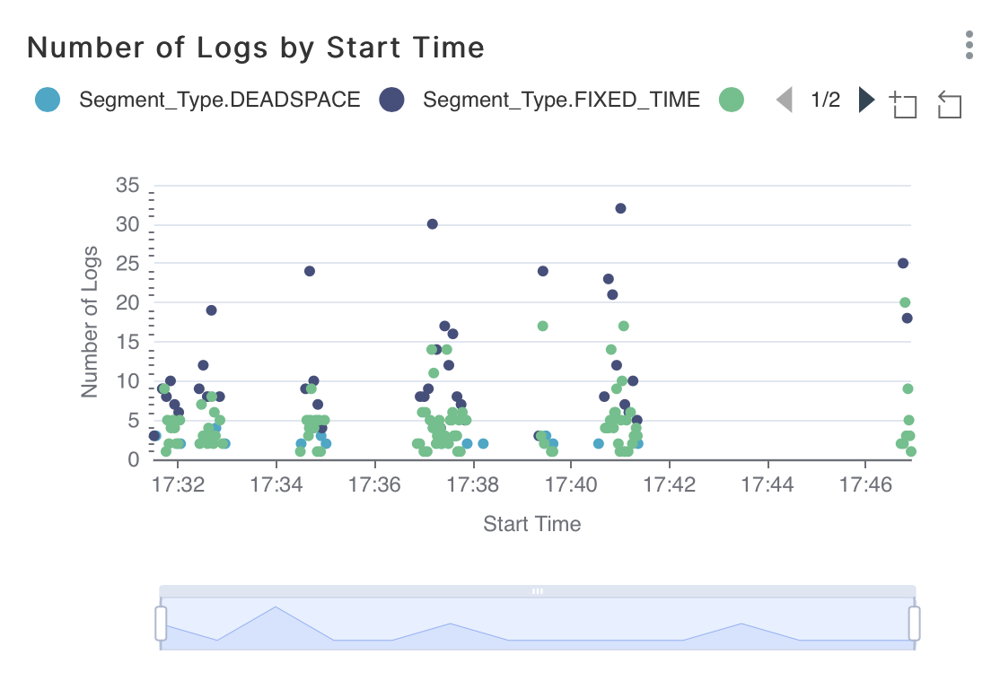
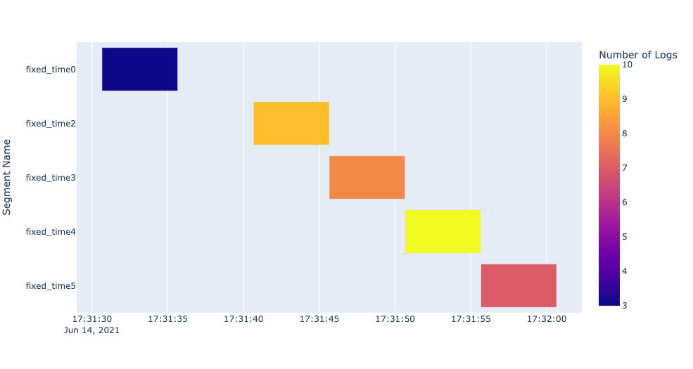

Exporting Segments
Segments objects can be exported into csv files for further analysis. Distill provides a simple function to do this:
export_segments. This function will take in the path to place the new file along with a Segments object and output
a new csv with each Segment on a new line. Note that this function will not currently export user defined attributes that
are not inherently within a Segment object. This function can be used as follows:
# Segments object
segments
# Export segments into a csv file
distill.export_segments("./test.csv", segments)
The above code will create a csv file in the current directory entitled “test.csv”. An example of what this file looks
like with two Segment objects can be seen below:
Segment Name,Start Time,End Time,Number of Logs,Generate Field Name,Generate Matched Values,Segment Type
segment1,0,1,5,type,['click'],Segment_Type.GENERATE
segment2,2,3,6,type,['click'],Segment_Type.GENERATE
Visualization Examples
One specific benefit of exporting Segment objects into a csv file is the ability for those Segment objects to be
visualized using pre-existing visualization software. Through the returned csv file, we have been successful in building
visualizations through both Apache Superset and Plotly. Below are example visualizations from each software:
Apache Superset
By importing our Segment csv file, we can create a variety of useful visualizations with Apache’s Superset.
Below are a few example screenshots from Superset:
Pie Chart indicating the different Segment types.
{kind=link}
Bar Chart indicating the number of Segment objects with a given number of logs.
{kind=link}
Timeline showing the Number of Logs by Segment start time.
{kind=link}
Plotly
Plotly is another visualization tool that can be used to generate useful graphs and charts.
One chart that we found particularly useful was the ability to visualize Segment objects within a Gantt chart. Below
is an example use of this chart.
To create the chart, the following code can be used assuming a csv file entitled example_segments.csv exists in the current
directory and this file represents start and end times in the python datetime formatting:
import pandas as pd
import plotly.express as px
df = pd.read_csv("./example_segments.csv")
fig = px.timeline(df, x_start="Start Time", x_end="End Time", y="Segment Name", color="Number of Logs")
fig.update_yaxes(autorange="reversed")
fig.show()
The above code will create a Gantt chart similar to the screenshot shown below:
{kind=link}
In addition, Plotly’s Dash can be used to create useful dashboards that display Plotly plots. An example of this can be seen in the video below: